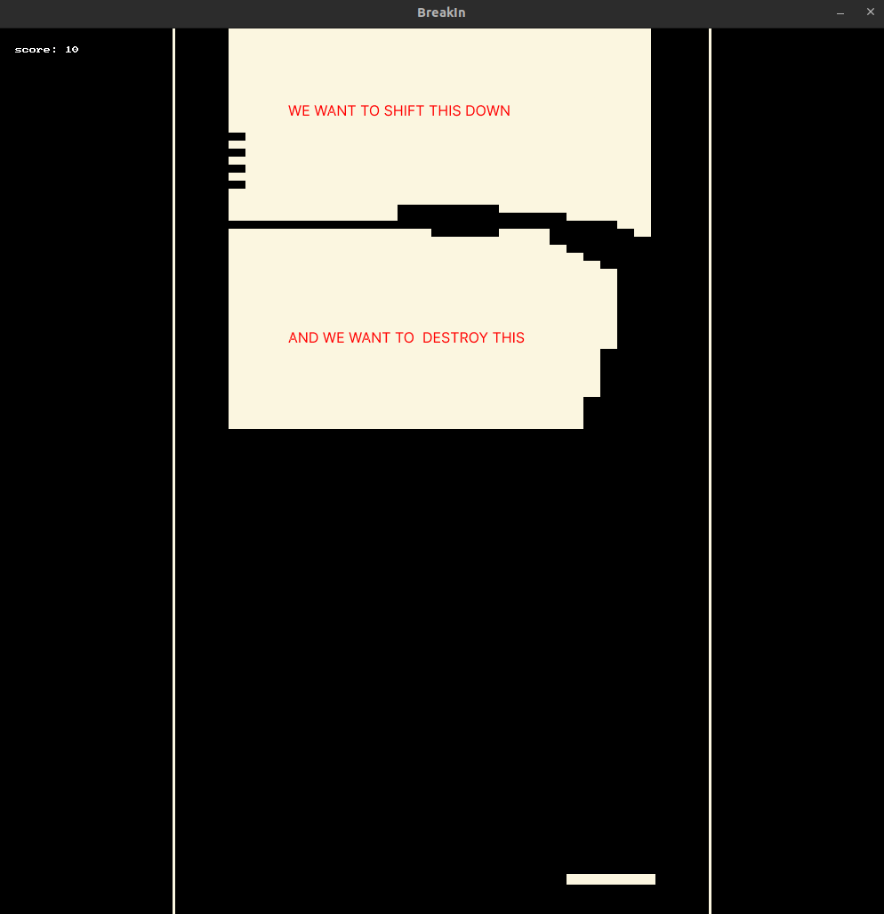
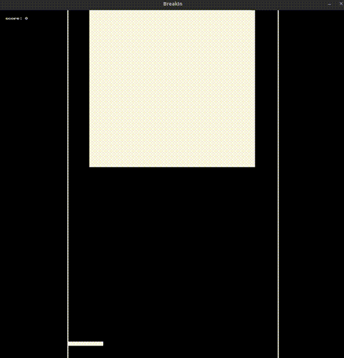

Building Graphical Applications With Splashkit
BreakIn: A Game Development Tutorial

Table of Contents
- Introduction
- Overview of BreakIn
- Setting up the development environment
- The Event Loop
- Understanding the main game loop
- Event handling and game flow
- Detour - Utility Functions
- Implementing utility functions for game development
- Rolling our own XOR PRNG
- Setting Up Global Constants
- Defining constants for screen dimensions and gameplay settings
- Organizing global constants for easy access and modification
- Global State Management
- Designing the global state structure
- Managing game-wide states and settings
- Basic Game Entities
- Defining instance structures for game objects
- Abstracting common functionalities
- Initialising Game Entities
- Creating instances of game objects
- Initialising states for gameplay
- Terrain Grid and Block Positioning
- Implementing the grid system for blocks
- Storing block positions within the grid
- Populating the Grid
- Creating a function to generate a fully populated grid
- Updating State and Looping Back
- Handling state changes during gameplay
- Integrating state updates with the event loop
- Implementing update functions for game entities
- Drawing the Game
- Implementing draw functions for game entities
- Rendering the game state on the screen
- Making the Terrain Endless
- Implementing DFS culling to remove disconnected blocks
- Adding velocity to blocks for smooth transition
- Particles
- Creating a particle type
- Implementing particle updates and drawing
- Spawning particles on block destruction
- Juice, Particles, and Color
- Enhancing the game with visual effects
- Adding particle systems for dynamic interactions
- Incorporating color and graphics enhancements
- Conclusion
- Recap and next steps for game development
Introduction
BreakIn is a game development project that explores basic game design patterns and implementations, walking you through building something that combines classic arcade gameplay with some procedural generation and programmatic drawing techniques. This tutorial will guide you through the development process, leveraging SplashKit as the graphics engine.
Our initial goal is to create a simple breakout-style game where the player controls a paddle to bounce a ball and break an endless stream of blocks. We will start with the core game loop, event handling, and state management, then gradually introduce more complex features like physics, terrain generation, and visual effects.
note: This tutorial uses a combination of imperative and functional / declarative patterns to encapsulate and inform functionality, this is a personal choice by me based on both the implementation language and my general distaste for object oriented design patterns. That said, the concepts and broad implementation patterns covered from here on out can easily be applied to an object oriented approach.
Setting up the development environment
To begin, ensure you have the necessary tools and libraries installed:
-
SplashKit SDK: Download and install the SplashKit SDK from the official website.
-
C++ Compiler: Ensure you have a C++ compiler set up. For Windows, you can use MinGW or Visual Studio. For macOS and Linux, GCC or Clang are good options.
-
IDE: While not mandatory, an Integrated Development Environment (IDE) like Visual Studio Code or CLion (Jetbrains) can streamline your development process.
Once you have the environment set up, initialise a new Spashkit project:
Make the project folder and navigate to it:
mkdir BreakIn
cd BreakIn
Then initialise a new Splashkit project:
skm new c++
Open the project in your IDE.
The Event Loop
At the heart of BreakIn—and indeed, any game development project—lies the event loop, a perpetual cycle that processes input, updates game state, and renders the game frame by frame. This cyclical nature is how graphical applications implement a continuous experience, reflecting real-time interaction. Utilising SplashKit, we will delve into the functionality exposed by the event loop, unraveling its components and demonstrating how it functions as the game’s central nervous system.
Understanding the Main Game Loop
The main game loop is a fundamental paradigm that drives game execution. It encompasses three critical stages: processing input, updating game state, and rendering.
- Input: Capturing and interpreting player actions as meaningful game commands.
- Update: Adjusting the game state in response to input, time passage, and internal logic.
- Render: Drawing the visual representation of the current game state onto the screen.
Each iteration of the loop is a snapshot, a single frame in the game’s lifespan. As such, it must be both efficient and comprehensive to maintain the illusion of continuity.
Here’s a diagram demonstrating a single iteration of the game loop / state management flow we are going ot implement; it demonstrates distinct separation of concerns around management of discrete state and rendering patterns:

Event Handling and Game Flow
SplashKit simplifies event management, providing a structured approach to handling user input and system events. note: The comments in the code block below are for the purposes of the tutorial.
program.cpp
// import
#include "splashkit.h"
int main()
{
// Open the window to begin the game
open_window("BreakIn", 800, 600);
hide_mouse(); // hide mouse while cursor is over game window
// Main game loop: continues to run until the window is closed
while (!quit_requested())
{
// Ingest input from peripheral devices
process_events();
// Update game state values (we will implement this routine ourselves)
update_global_state(gamestate);
// Draw to frame buffer (we will also implement this)
draw_global_state(gamestate);
// Refresh at target frames per second
refresh_screen(60);
}
// Close the game window and clean up resources
close_window("BreakIn");
return 0;
}
Within this loop, you will integrate logic to react to keyboard strokes, mouse movements, and other player inputs. process_events function serves as the dispatcher, funneling input in to scope.
update_game_state mutates the game’s state, readying it for the next frame’s visual portrayal.
draw_game will invoke functions to generate the next frame of the game.
refresh_screen concludes the cycle by presenting the updated state to the player.
This section establishes the importance of the event loop and provides a foundation against which we can start designing implementations. In the following sections, we will populate this loop with the functionality described above.
We will explore creating a structured and easily manageable state system, incorporating conventions which enforce composable and extendable code. We’ll examine how to encapsulate the game state, manage transitions, and effectively control game flow.
This will set the foundation for the more intricate features of your game and ensure that all components work cohesively to create a seamless gaming and development experience.
Detour - Utility Functions
Before diving into the core game development concepts, we’ll quickly implement a couple of helpful functions that we’ll use later, as well as our own PRNG type which is the only object with member functions we’ll implement directly in this tutorial. The reason for this is that a PRNG is one of the only abstractions where I can confidently say encapsulation of functionality and state is the best design approach (it needs to be portable, expose a consistent interface, and maintain its own state throughout the application lifetime). The rest of our functionality will be implemented as functions which take in and return data structures, this is to keep our code as simple and composable as possible.
Utility Functions in BreakIn
XORShift PRNG
XOR.h
#pragma once
#include <cstdint>
#include <algorithm>
#include <stdexcept>
#include <limits>
#include <vector>
/**
* @brief Simple random number generator based on XOR shift algorithm.
*/
struct XOR {
/**
* @brief Constructor for XOR random number generator.
* @param initialSeed The initial seed value for the generator.
*/
XOR(uint32_t initialSeed = 0x77777777);
/**
* @brief Generates a random integer in the range [min, max].
* @param min The minimum value of the range.
* @param max The maximum value of the range.
* @return A random integer in the specified range.
*/
inline int randomInt(int min, int max);
/**
* @brief Generates a random float in the range [min, max].
* @param min The minimum value of the range.
* @param max The maximum value of the range.
* @return A random float in the specified range.
*/
inline float randomFloat(float min = 0.0f, float max = 1.0f);
/**
* @brief Generates a boolean value with a given probability of being true.
* @param probability The probability of returning true (0.0f to 1.0f).
* @return true with the specified probability, false otherwise.
*/
inline bool chance(float probability = 0.5f);
/**
* @brief Chooses a random element from a vector.
* @param vec The vector from which to choose.
* @return A random element from the vector.
* @throws std::invalid_argument if the vector is empty.
*/
template<typename T>
inline T choose(const std::vector<T>& vec);
/**
* @brief Chooses a random element from an array.
* @param arr The array from which to choose.
* @return A random element from the array.
*/
template<typename T, size_t N>
inline T choose(const T (&arr)[N]);
private:
/**
* @brief Generates the next random number in the sequence.
* @return The next random number.
*/
inline uint32_t next();
uint32_t seed; ///< The current seed value for the generator.
};
// Inline function definitions
inline XOR::XOR(uint32_t initialSeed) : seed(initialSeed) {}
inline uint32_t XOR::next() {
seed ^= seed << 13;
seed ^= seed >> 17;
seed ^= seed << 5;
return seed;
}
inline int XOR::randomInt(int min, int max) {
if (max < min) {
std::swap(min, max);
}
uint32_t range = static_cast<uint32_t>(max - min + 1);
return min + static_cast<int>(next() % range);
}
inline float XOR::randomFloat(float min, float max) {
float normalized = next() * (1.0f / 4294967296.0f);
return min + normalized * (max - min + std::numeric_limits<float>::epsilon());
}
inline bool XOR::chance(float probability) {
return randomFloat() < probability;
}
template<typename T>
inline T XOR::choose(const std::vector<T>& vec) {
if (vec.empty()) {
throw std::invalid_argument("Vector is empty");
}
int index = randomInt(0, vec.size() - 1);
return vec[index];
}
template<typename T, size_t N>
inline T XOR::choose(const T (&arr)[N]) {
return arr[randomInt(0, N - 1)];
}
This looks complex but it’s a simple declaration for an XORShift PRNG, it’s small and has a very good period (the number of unique values it can generate before repeating) for a 32-bit PRNG. It is a perfectly simple interface for our purposes.
Why not use an inbuilt C++ prng?
We only really need a simple interface for generating random numbers, and the inbuilt PRNGs in C++ are often more complex than we need. We also want to be able to control the seed of our PRNG, which is not always possible with the inbuilt PRNGs. Mainly, though, I just like this implementation.
So aside from seeding the constructor (which we will cover later), the PRNG exposes 4 public methods:
randomInt(min, max) which returns a random integer between min and max (inclusive).
randomFloat(min, max) which returns a random float between min and max (inclusive).
chance(probability) which returns a boolean based on the probability (min: 0.0, max: 1.0) passed in.
choose(vec) and choose(arr) which return a random element from a vector or array respectively (these are Template (Generic) functions, they are called exactly the same).
You don’t need to worry about the implementation of these functions, just know that a single XOR instance will be declared with our globals and will be used throughout the application.
We will also implement a couple of utility functions in a new file called util.h which will be used throughout the game.
note: Both of these header files contain inline definitions as well as the declarations, this is because the functions don’t really help extend or interface with other code (and so it doesn’t make sense to define them alongside other related patterns), they are just small utilities which we want to inline for performance and simplicity.
In the rest of the tutorial we will be decoupling our definitions from our implementation, this is just a small exception.
util.h
#pragma once
#include "splashkit.h"
#include "stdio.h"
#include <stdexcept>
/**
* @brief Convert a hex string to a color.
*
* @param hex The hex string.
* @return color The color.
*/
inline color color_from_hex(const std::string& hex) {
int r, g, b;
sscanf(hex.c_str(), "#%02x%02x%02x", &r, &g, &b);
return rgb_color(r, g, b);
}
/**
* @brief Map a value from one range to another.
*
* @param value The value to map.
* @param input_min The input minimum.
* @param input_max The input maximum.
* @param output_min The output minimum.
* @param output_max The output maximum.
* @return double The mapped value.
*/
inline double map_value(double value, double input_min, double input_max, double output_min, double output_max) {
// Calculate the ratio between the input range and output range
double scale = (output_max - output_min) / (input_max - input_min);
// Map the value to the new range
return output_min + (value - input_min) * scale;
}
/**
* @brief Clamp a value between a low and high value.
*
* @tparam T The value type.
* @param value The value to clamp.
* @param low The low value.
* @param high The high value.
* @return T The clamped value.
*/
template<typename T>
T clamp(const T& value, const T& low, const T& high);
template<typename T>
T clamp(const T& value, const T& low, const T& high) {
return (value < low) ? low : (value > high) ? high : value;
}
Briefly, these 3 functions are:
color_from_hex(hex) which takes a hex string and returns a Splashkit color object (very useful when working with colour tools like p4lette).
map_value(value, input_min, input_max, output_min, output_max) which maps a value from one range to another (useful for scaling values).
clamp(value, low, high) which clamps a value between a low and high value (useful for ensuring values are within a certain range).
These functions are simple and will be used throughout the game to simplify and abstract some common operations.
Next we will look at how to set up the constant values which will help define our game space.
Setting Up Global Constants
Global constants are where we define the overall settings and configurations of the game. We’ll use globals.h to declare and define these constants as we are using some operators (inline constexpr) which require a value to be known at compile time / defined in a header.
You do not necessarily have to use this pattern, it’s fine to use extern const and define the values in a source file, or simply define these values as const in a header file. The important thing is that you maintain a single source of truth for these values.
This is a good practice as it allows us to easily modify the game’s settings from a central location.
globals.h
In globals.h, we declare global constants (immutable values) that will be used throughout the game. This header file acts as a central point of reference for all global settings. We maintain these separately from our gamestate struct as they are not mutable values, they function as universal rules which our gameplay systems are implemented against and as such they should be abstracted as far away from our mechanical functionality as possible.
globals.h
#pragma once
#include "splashkit.h"
#include "XOR.h"
#include "util.h"
/**
* @brief The global window dimensions.
*
*/
inline constexpr int WINDOW_WIDTH = 1000;
inline constexpr int WINDOW_HEIGHT = 1000;
/**
* @brief The global game area dimensions.
*
*/
inline constexpr int GAME_AREA_WIDTH = 600;
inline constexpr int GAME_AREA_HEIGHT = 1000;
inline constexpr int GAME_AREA_OFFSET = (WINDOW_WIDTH - GAME_AREA_WIDTH) / 2;
inline constexpr int GAME_AREA_START = GAME_AREA_OFFSET;
inline constexpr int GAME_AREA_END = GAME_AREA_START + GAME_AREA_WIDTH;
/**
* @brief The global terrain dimensions and offsets relative to window.
*
*/
inline constexpr int TERRAIN_OFFSET = GAME_AREA_OFFSET + GAME_AREA_WIDTH / 10;
inline constexpr int TERRAIN_WIDTH = GAME_AREA_WIDTH - GAME_AREA_WIDTH / 5;
inline constexpr int TERRAIN_HEIGHT = TERRAIN_WIDTH;
/**
* @brief Terrain dimensions
*
*/
inline constexpr int NUM_ROWS = 50;
inline constexpr int NUM_COLS = 25;
/**
* @brief The global block dimensions inside the Terrain Grid.
*
*/
inline constexpr int BLOCK_WIDTH = TERRAIN_WIDTH / NUM_COLS;
inline constexpr int BLOCK_HEIGHT = TERRAIN_HEIGHT / NUM_ROWS;
inline constexpr float BLOCK_POWERUP_CHANCE = 0.02;
inline constexpr int INITIAL_PADDLE_WIDTH = WINDOW_WIDTH / 10;
inline constexpr int MAX_PADDLE_WIDTH = INITIAL_PADDLE_WIDTH * 2;
inline constexpr int MIN_PADDLE_WIDTH = INITIAL_PADDLE_WIDTH / 2;
// rng
/**
* @brief The global random number generator.
*
*/
inline XOR rng = XOR();
/**
* @brief The game palette.
*
*/
const color clr_background = color_from_hex("#000000");
const color clr_paddle = color_from_hex("#FBF6E0");
const color clr_block = color_from_hex("#FBF6E0");
const color clr_ball_standard = color_from_hex("#FBF6E0");
const color clr_ball_explosion = color_from_hex("#FF2727");
const color clr_ball_acid = color_from_hex("#AFFF26");
Most of these are spatial parameters which will be used to define the game space and the entities within it. We also define some colors which will be used to render the game entities. The global XOR PRNG instance is also declared here, as are the color objects which inform the game palette.
There is a lot going on here which you don’t need to worry too much about, these variables are defined relative to each other so that changes to the overall dimensions of the game space are reflected in the dimensions of the entities within it.
Just to show you how these values are being used, and why there are so many of them, let’s fast forward and have a look at this breakdown of the game screen:

Take your time to get a feel for how these values are being used relative to each other, and have a think about what else they might be used for later in our development.
note: For the rest of the tutorial we will be omitting the Doxygen comments for brevity, however they will be available in the provided source code.
Now we can edit our main file to use some these variables during window instantiation.
program.cpp
// import
#include "splashkit.h"
#include "globals.h" // <- added this import
// we will declare these in header files later
void update_game();
void draw_game();
int main()
{
// Open the window to begin the game
// using new global constants
open_window("BreakIn", WINDOW_WIDTH, WINDOW_HEIGHT);
hide_mouse(); // hide mouse while cursor is over game window
// Main game loop: continues to run until the window is closed
while (!quit_requested())
{
// Ingest input from peripheral devices
process_events();
// Update game state values (we will implement this routine ourselves)
update_global_state(gamestate);
// Draw to frame buffer (we will also implement this)
draw_global_state(gamestate);
// Refresh at target frames per second
refresh_screen(60);
}
// Close the game window and clean up resources
close_window("BreakIn");
return 0;
}
In later sections, we’ll access these global constants to during the initialisation of some of our game entities.
Global State Management
In BreakIn, we use a struct to encapsulate our mutable game data, which most functions we will implement later accept a reference to as an argument. This allows for extremely granular and high-level control over what state is updated and when, and forces us to be more accountable when we implement patterns which mutate state. By explicitly requiring the game state to be passed as an argument, it keeps the function’s dependencies clear and makes it easy to see how the game state is being modified.
Implementing GameState
With our GameState struct, we can start defining the variables that will hold the game’s mutable data. For now, we’ll keep it simple with just a couple of variables, but this will expand as we add more features to the game.
struct GameState {
int score;
// Additional game state variables will be added here
};
GameStatus Enum
In addition to the GameState struct, we have the GameStatus enum to represent the high-level states of the game, such as whether the game is in the menu, in play, paused, or has ended.
enum GameStatus {
MENU,
PLAYING,
PAUSED,
ENDED
};
This enum type will be used to control the flow of the game and determine which high-level control pattern should be executed at any given time.
Now we can extend our GameState definition to include a GameStatus struct as a member variable, as it constitutes part of our mutable state.
struct GameState {
int score;
GameStatus game_status;
// Additional game state variables will be added here
};
Finally, we will define these structs inside a new header filed called types.h located in our root directory.
types.h
#pragma once // linker flag
enum GameStatus {
MENU,
PLAYING,
PAUSED,
ENDED
};
struct GameState {
int score;
GameStatus game_status;
// Additional game state variables will be added here
};
We will cover instantiating and updating this state in later sections, for now let’s think about what minimum functionality our game needs and go about implementing it.
Basic Game Entities
With the global state management set up, we can now define the basic entities in BreakIn: blocks, balls, and the paddle. These entities will have minimal properties to begin with.
Block Struct
The Block struct represents the individual blocks that the player aims to break with the ball. Each block has an active state and a position.
struct Block {
bool active;
point_2d pos;
};
Paddle Struct
The Paddle struct represents the player’s paddle, which can move horizontally. The paddle has a position.
struct Paddle {
point_2d pos;
};
Ball Struct
The Ball struct represents the projectiles which collide with the paddle and with blocks. Each ball has an active state, a position, and a velocity.
struct Ball {
bool active;
point_2d pos;
vector_2d vel; // velocity along x and y axes
};
note: point_2d and vector_2d are datatypes exposed by Splashkit and can be referenced in any file that imports the Splashkit library, they are both structs which look like:
struct {
float x;
float y;
}
Now we can update our types.h file to look like:
#pragma once // linker flag
#include "splashkit.h"
struct Ball {
bool active;
point_2d pos;
vector_2d vel; // velocity along x and y axes
};
struct Paddle {
bool active;
point_2d pos;
};
struct Block {
bool active;
point_2d pos;
};
enum GameStatus {
MENU,
PLAYING,
PAUSED,
ENDED
};
struct GameState {
int score;
GameStatus game_status;
// Additional game state variables will be added here
};
So, we are creating a system of entity types which will exist (based on their pos (position) property) in an abstract space (which we defined above) when instantiated. This abstract space is independent of any visual representation; it is a conceptual framework where our game objects interact and change state based on the game’s rules and logic.
In essence, we are simulating a system of interactions and changes in the background, driven solely by the values and states of our entities. It is only at each time step that this abstract system is translated into a rendered frame, providing the visual representation of our game on the screen. For instance, while our position vectors currently correspond 1:1 with pixel positions within the game window, we could easily make our abstract space much bigger or smaller than the space our internal values correspond to, and draw their graphics against some function of the differential between the two spaces (ie. double the position vector before drawing if the screen space is 2:1 our abstract space).
The game’s logic and mechanics are maintained completely separately from, and only interact with our render in one direction (nothing in our draw functions will mutate the state of the game).
With that in mind, let’s look at how we can place stuff in this space.
Initialising Game Entities
With our basic game entities and global constants set up, we can now focus on initialising the game state and individual entities like the paddle, balls, and blocks.
We will use top-level functions to instantiate game entities such as the paddle, ball, and blocks, instead of using class constructors. This design choice is aligned with our functional programming approach, which emphasises the use of functions to create and manipulate data.
One of the reasons for this approach is to maintain a clear separation between the game entities (represented by structs) and the logic used to create and manipulate them. By using top-level functions, we can keep our data structures simple and focused solely on holding data, while the functions handle the creation and initialisation logic.
In a new file (state_init.h) we will declare some initialisation functions.
state_init.h
#pragma once // linker flag
#include "types.h"
Paddle new_paddle();
Ball new_ball(point_2d pos, vector_2d vel, int size, color clr);
Block new_block(point_2d pos, int width, int height, color clr);
By making the paddle position (and below, dimensions) a function of our screen space (remember the paddle constants in globals.h), it means we can adjust the screen dimensions without worrying about the relative position and size of our paddle.
Then in state_init.cpp we can define the function bodies.
state_init.cpp
#include "globals.h"
#include "state_init.h"
// new_paddle takes no arguments as all its properties
// are derived from global constant values
Paddle new_paddle() {
Paddle paddle;
// make paddle's initial position center-bottom
paddle.pos.x = WINDOW_WIDTH / 2;
paddle.pos.y = WINDOW_HEIGHT - 50;
paddle.width = INITIAL_PADDLE_WIDTH;
paddle.height = WINDOW_HEIGHT / 80;
paddle.clr = clr_paddle; // global constant
return paddle;
}
Ball new_ball(point_2d pos, vector_2d vel, int size, color clr) {
Ball ball;
ball.pos = pos;
ball.vel = vel;
ball.size = size;
ball.clr = clr;
ball.active = true;
return ball;
}
Block new_block(point_2d pos, int width, int height, color clr) {
Block block;
block.pos = pos;
block.width = width;
block.height = height;
block.clr = clr;
block.active = true;
return block;
}
You will notice we are instantiating properties which we did not define in types.h against these structs, now would be a good time to add them. Both Paddle and Block will need int width and height properties while our Balls will always be symmetrical and thus only require a size property. We’re also adding a color property to each, color is a Splashkit type. These will be used to inform the draw and collision functions we will develop later:
types.h
#pragma once
#include "splashkit.h"
struct Ball {
bool active;
point_2d pos;
vector_2d vel;
int size;
color clr; // `color` is a Splashkit type
};
struct Paddle {
point_2d pos;
int width;
int height;
color clr;
};
struct Block {
bool active;
point_2d pos;
int width;
int height;
color clr;
};
enum GameStatus {
MENU,
PLAYING,
PAUSED,
ENDED
};
struct GameState {
int score;
GameStatus game_status;
// Additional game state variables will be added here
};
Terrain Grid and Block positioning
Before we dive into updating the game state and handling collisions, let’s take a moment to discuss the Grid system used to represent the blocks in the game, as well as the ivec2 type and the purpose of each block storing its own grid position.
Terrain Grid
In BreakIn, the blocks are organized in a 2D grid called terrain within the GameState struct. This grid is represented using a special data structure composed of a vector of vectors of unique pointers to Block instances.
types.h
/**
* @brief A Row is a vector of unique pointers to blocks.
* @details A Row is used to represent a row of blocks in the game.
*/
using Row = std::vector<std::unique_ptr<Block>>;
/**
* @brief A Grid is a vector of rows.
* @details A Grid is used to represent the grid of blocks in the game.
*/
using Grid = std::vector<Row>;
// ...other types
The Row type is defined as a vector of unique pointers to Block instances. Each element in the Row vector represents a block in that row. The use of unique pointers ensures that each block is owned by the Row and will be automatically deleted when the Row is destroyed or the block is removed from the grid.
The Grid type is defined as a vector of Row instances. Each element in the Grid vector represents a row of blocks in the game. By combining these two types, we create a 2D grid structure that efficiently manages the blocks in the game.
Using this grid system provides several benefits:
- It allows for easy access and manipulation of blocks based on their row and column positions.
- The use of unique pointers ensures proper memory management and ownership of the blocks.
- It provides a clear and organized structure for representing the game’s block layout.
ivec2 Type and Block Grid Position
In addition to the grid system, each Block instance also stores its own grid position using the ivec2 type. The ivec2 type is a simple struct that represents a 2D vector with integer components.
types.h
/**
* @brief A 2D integer vector.
* @details An ivec2 is used to represent a 2D vector with integer components.
*/
struct ivec2 {
int x, y;
};
// ...other types
By storing the grid position internally within each Block instance, we can easily identify the row and column of the block within the grid. This information is useful for various purposes, but fundamentally it gives us a way to find the block in the Grid when we encounter it based on its position in the game space.
Updated version of the Block struct that includes the grid_pos member:
types.h
struct Block {
bool active;
point_2d pos;
int width;
int height;
color clr;
ivec2 grid_pos;
};
state_init.h
// ...other declarations
Block new_block(point_2d pos, ivec2 grid_pos, int width, int height, color clr);
state_init.cpp
// ...rest of file
Block new_block(point_2d pos, ivec2 grid_pos, int width, int height, color clr) {
Block block;
block.pos = pos;
block.grid_pos = grid_pos;
block.width = width;
block.height = height;
block.active = true;
block.clr = clr;
return block;
}
The grid_pos member stores the row and column position of the block within the grid.
With this understanding of the grid system and block positioning, let’s proceed to update the GameState struct and implement the state update functions.
Populating the Grid
For now, we’ll just write a function to return a fully populated Grid. Later we’ll extend this to be more dynamic but right now we just want to get something on the screen.
new_grid()
state_init.h
// ...other declarations
Grid new_grid();
state_init.cpp
// ...rest of file
Grid new_grid() {
Grid grid;
for (int y = 0; y < NUM_ROWS; ++y) {
// create a new row (which is a vector of Blocks remember)
Row row;
for (int x = 0; x < NUM_COLS; ++x) {
// assign world position based on global constants
point_2d pos = {static_cast<double>(TERRAIN_OFFSET + x * BLOCK_WIDTH), static_cast<double>(y * BLOCK_HEIGHT)};
// discrete position in grid structure
ivec2 grid_pos = {x, y};
row.push_back(std::make_unique<Block>(new_block(pos, grid_pos, BLOCK_WIDTH, BLOCK_HEIGHT, clr_block)));
}
grid.push_back(std::move(row));
}
return grid;
}
Now that we have our entities defined and initialisation functions set up, we can move on to updating the game state and looping back to the event loop.
We will implement very basic state updates in the next section so that we can get something happening on screen, and then move on to more complex interactions and game logic.
Updating State and Looping Back
Updating the GameState Struct
Let’s update the GameState struct in the types.h file to include vectors for the balls and terrain, as well as our player Paddle. We’ll also forward declare our main types so that we can refer to them in this file before they’re defined.
types.h
#include <memory>
#include <vector>
#include "splashkit.h"
struct ivec2;
struct GameState;
struct Paddle;
struct Ball;
struct Block;
// ...other types
struct GameState {
int score;
GameStatus game_status;
Paddle paddle;
std::vector<Ball> balls;
Grid terrain;
};
With our game entities defined and initialisation functions set up, we can now focus on updating the game state and looping back to the event loop.
Updating the GameState
We need a function to initialise a new GameState instance with default values. Let’s add this function in the state_init.h file.
state_init.h
// ...other declarations
GameState new_game_state();
state_init.cpp
// ...rest of file
GameState new_game_state() {
GameState game;
game.score = 0;
game.game_status = PLAYING;
game.terrain = new_grid();
game.paddle = new_paddle();
game.balls = {};
return game;
}
This function creates a new GameState instance, initialises the score to 0, sets the game status to PLAYING, creates a new grid of blocks, initialises the paddle, and leaves the balls vector empty (we’ll add balls later).
Declaring update functions
Let’s make a new header file:
state_management.h
#pragma once
#include "types.h"
// GLOBAL
void update_global_state(GameState& g);
// BLOCK
void block_update(Block& b, GameState& g);
// TERRAIN BLOCKS
void update_terrain(GameState& g);
//BALL
void ball_update(Ball& b, GameState& g);
void ball_check_wall_collision(Ball& b);
void ball_check_block_collision(Ball& b, GameState& g);
void ball_check_paddle_collision(Ball& b, GameState& g);
void update_balls(GameState& g);
// PADDLE
void paddle_update(GameState& g);
In this file, we declare functions to update the paddle, balls, blocks (terrain), and the global game state. We also have ball functions to check for collisions with the walls, blocks, and paddle which we need to call in the ball update function.
Implementing update functions
Let’s quickly scaffold these functions then circle back and populate them one at a time:
paddle_state.cpp
#include "state_management.h"
#include "globals.h"
void paddle_update(GameState& g) {
// Update paddle position based on user input
// (to be implemented)
}
ball_state.cpp
#include "state_management.h"
#include "globals.h"
void ball_update(Ball& b, GameState& g) {
if (!b.active) {
return;
}
// Update ball position
b.pos.x += b.vel.x;
b.pos.y += b.vel.y;
// Check for collisions
ball_check_wall_collision(b);
ball_check_block_collision(b, g);
ball_check_paddle_collision(b, g);
}
void ball_check_wall_collision(Ball& b) {
// Check for collision with walls and update velocity accordingly
// (to be implemented)
}
void ball_check_block_collision(Ball& b, GameState& g) {
// Check for collision with blocks and update block state and ball velocity
// (to be implemented)
}
void ball_check_paddle_collision(Ball& b, GameState& g) {
// Check for collision with paddle and update ball velocity
// (to be implemented)
}
void update_balls(GameState& g) {
for (auto& ball : g.balls) {
ball_update(ball, g);
}
// Remove inactive balls from the vector
g.balls.erase(std::remove_if(g.balls.begin(), g.balls.end(), [](const Ball& b) { return !b.active; }), g.balls.end());
}
The pattern here where we pass the game state by reference to each function is important, it allows us to update the game state in a controlled and predictable way. We will be able to see exactly what is being updated and when, and we can easily add new functionality by adding new functions which take the game state as an argument.
The other pattern to note is update_balls which iterates over the balls in the game state and calls ball_update on each one. This is a common pattern in game development, where you have a collection of entities which need to be updated in the same way each frame.
block_state.cpp
#include "state_management.h"
#include "globals.h"
void block_update(Block& b, GameState& g) {
if (!b.active) {
return;
}
// Update block state
// (to be implemented)
}
void update_terrain(GameState& g) {
// Update each block
for (auto& row : g.terrain) {
for (auto& block : row) {
if (block) {
block_update(*block, g);
if (!block->active) {
block.reset(); // Automatically deletes the block and sets the pointer to nullptr
}
}
}
}
}
At this point it is natural to be wondering what the purpose of the active property is when we could just destroy the object when it is no longer needed. This is an order of operations consideration; imagine we have a collision which destroys a block and spawns a powerup, we want to be able to update the block state and then spawn the powerup in the same frame. By setting the block to inactive we can ensure that the block is not drawn or updated, but we can still access its properties and use them to spawn a powerup (or particles or whatever) before we delete the block (so we can still access its position etc even after it stops being part of the game).
So where we have the check: if (!b.active) return; instead of returning we could call a function to spawn a powerup or particles or whatever, as block_update() is called before the block is deleted in update_blocks().
global_state.cpp
#include "state_management.h"
void update_global_state(GameState& g) {
paddle_update(g);
update_balls(g);
update_terrain(g);
}
This function will be called in the main game loop to update the game state each frame. It calls the other update functions to update the paddle, balls, and blocks.
Now let’s fill in the missing code in the update functions and explain what’s happening in each one.
paddle_state.cpp
#include "state_management.h"
#include "globals.h"
void paddle_update(GameState& g) {
g.paddle.pos.x = clamp((int) mouse_x(), GAME_AREA_START, GAME_AREA_END - g.paddle.width);
}
In the paddle_update function, we update the paddle’s position based on the mouse’s x-coordinate. We use the clamp function from util.h to ensure that the paddle stays within the game area’s boundaries, taking into account the paddle’s width.
When we talk about taking in to account the paddle’s width, it’s important to mention that in Splashkit (and many other graphical frameworks) the origin of a rectangle is its top-left corner. This means that when we draw a rectangle at a given position, the position refers to the top-left corner of the rectangle. This is important to remember when calculating the position of the paddle, as we need to ensure that the entire paddle is within the game area.
In this situation, we are setting the x-coordinate of the paddle to the mouse’s x-coordinate, but we also need to ensure that the entire paddle is within the game area. To do this, we use the clamp function to ensure that the paddle’s x-coordinate is within the game area’s boundaries, which means subtracting the paddle’s width from the game area’s end position (if the origin of the paddle is paddle.width away from the right edge of the game area, the right edge of the paddle will be at the right edge of the game area).

ball_state.cpp
#include "state_management.h"
#include "globals.h"
void ball_update(Ball& b, GameState& g) {
if (!b.active) {
return;
}
// Update ball position
b.pos.x += b.vel.x;
b.pos.y += b.vel.y;
// Check for collisions
ball_check_wall_collision(b);
ball_check_block_collision(b, g);
ball_check_paddle_collision(b, g);
}
void ball_check_wall_collision(Ball& b) {
if (b.pos.y > GAME_AREA_HEIGHT) {
b.active = false;
return;
}
if (b.pos.x < GAME_AREA_START + b.size || b.pos.x > GAME_AREA_END - b.size - 1) {
b.pos.x = (b.pos.x < GAME_AREA_START + b.size) ? GAME_AREA_START + b.size : GAME_AREA_END - b.size - 1;
b.vel.x *= -1.;
}
if (b.pos.y < 0 + b.size) {
b.pos.y = 0 + b.size;
b.vel.y *= -1.;
}
}
void ball_check_block_collision(Ball& b, GameState& g) {
for (auto& row : g.terrain) {
for (auto& block : row) {
if (block && block->active) {
// Check for collision
if (b.pos.x < block->pos.x + block->width && b.pos.x + b.size > block->pos.x &&
b.pos.y < block->pos.y + block->height && b.pos.y + b.size > block->pos.y) {
block->active = false;
g.score += 10;
// Determine collision direction (which side of block was hit)
float overlapLeft = (block->pos.x + block->width) - b.pos.x;
float overlapRight = (b.pos.x + b.size) - block->pos.x;
float overlapTop = (block->pos.y + block->height) - b.pos.y;
float overlapBottom = (b.pos.y + b.size) - block->pos.y;
bool x_overlap = std::min(overlapLeft, overlapRight) < std::min(overlapTop, overlapBottom);
// Reverse velocity based on the smallest overlap
if (x_overlap) {
b.vel.x *= -1; // Horizontal collision
} else {
b.vel.y *= -1; // Vertical collision
}
}
}
}
}
}
void ball_check_paddle_collision(Ball& b, GameState& g) {
if (b.pos.x < g.paddle.pos.x + g.paddle.width && b.pos.x + b.size > g.paddle.pos.x && b.pos.y >= g.paddle.pos.y) {
b.vel.y *= -1;
// adjust x velocity based on how close to centre of paddle the ball hits (further to edge = faster x rebound)
b.vel.x = map_value(b.pos.x - (g.paddle.pos.x + g.paddle.width / 2), 0, g.paddle.width / 2, 0, 5);
}
}
void update_balls(GameState& g) {
for (auto& ball : g.balls) {
ball_update(ball, g);
}
// Remove inactive balls from the vector
g.balls.erase(std::remove_if(g.balls.begin(), g.balls.end(), [](const Ball& b) { return !b.active; }), g.balls.end());
}
In ball_update, we update the ball’s position based on its velocity. We then check for collisions with the walls, blocks, and paddle using separate functions.
ball_check_wall_collision checks if the ball has collided with any of the walls and reverses its velocity accordingly. If the ball goes below the game area, it is deactivated.
ball_check_block_collision iterates through the terrain grid and checks if the ball has collided with any active blocks using AABB collision detection. If a collision is detected, the block is deactivated, and the ball’s y-velocity is reversed.
ball_check_paddle_collision checks if the ball has collided with the paddle and reverses its y-velocity. It also adjusts the ball’s x-velocity based on the collision position using the map_value function from util.h.
update_balls iterates through all the balls and calls ball_update for each one. It then removes any inactive balls from the vector using the erase-remove_if idiom.
Our Block / terrain update functions are fine as-is for now.
Drawing the game
Now let’s implement the draw functions so we can see our game in action. We’ll create a new header file called draw.h to declare our draw functions and implement them in a corresponding draw.cpp file.
draw.h
#include "types.h"
void draw_global_state(const GameState& g);
void block_draw(const Block& b);
void draw_terrain(const GameState& g);
void ball_draw(const Ball& b);
void draw_balls(const GameState& g);
void paddle_draw(const GameState& g);
draw.cpp
#include "draw.h"
#include "globals.h"
void draw_global_state(const GameState& g) {
clear_screen(clr_background);
fill_rectangle(color_from_hex("#FBF6E0"), GAME_AREA_START - 3, 0, GAME_AREA_WIDTH + 6, GAME_AREA_HEIGHT - 3);
fill_rectangle(clr_background, GAME_AREA_START, 0, GAME_AREA_WIDTH, GAME_AREA_HEIGHT);
draw_text("score: " + std::to_string(g.score), COLOR_WHITE, 20, 20, option_to_screen());
draw_terrain(g);
paddle_draw(g);
draw_balls(g);
}
void block_draw(const Block& b) {
if (b.active) {
fill_rectangle(b.clr, b.pos.x, b.pos.y, b.width, b.height);
}
}
void draw_terrain(const GameState& g) {
for (const auto& row : g.terrain) {
for (const auto& block : row) {
if (block) {
block_draw(*block);
}
}
}
}
void ball_draw(const Ball& b) {
fill_circle(b.clr, b.pos.x, b.pos.y, b.size);
}
void draw_balls(const GameState& g) {
for (auto& b : g.balls) {
ball_draw(b);
}
}
void paddle_draw(const GameState& g) {
fill_rectangle(g.paddle.clr, g.paddle.pos.x, g.paddle.pos.y, g.paddle.width, g.paddle.height);
}
In draw_paddle, we use the fill_rectangle function from SplashKit to draw the paddle based on its position, width, height, and color.
draw_ball uses the fill_circle function to draw the ball based on its position, size, and color.
draw_block uses the fill_rectangle function to draw a block based on its position, width, height, and color.
draw_terrain iterates through the terrain grid and calls draw_block for each active block.
Now is a good time to talk about draw ordering; if you draw one thing, and then draw something else on the same frame which overlaps the first thing, the second thing will be drawn on top of the first thing. This is important to remember when drawing things like the paddle and the balls, as the balls should be drawn on top of the paddle. We draw the balls last in the draw_global_state function so that they are drawn on top of everything else as the player needs visibility of the balls to play the game.
You will also notice that after we clear the background we draw a rectangle which is slightly larger than the game area, this is to create a border around the game area which will help to visually separate the game area from the rest of the screen. We then draw a slightly smaller rectangle in the same position, in the color of the background to clear the game area, this is how we get a vertical border around the game area (as only the vertical edges of the second rectangle will be visible).
Finally drawing
Now that we have our draw functions implemented, we can call them in the main game loop to draw the game entities on the screen.
program.cpp
#include "splashkit.h"
#include "globals.h"
#include "types.h"
#include "state_init.h"
#include "state_management.h"
#include "draw.h"
int main()
{
open_window("BreakIn", WINDOW_WIDTH, WINDOW_HEIGHT);
hide_mouse();
GameState game = new_game_state();
while (!quit_requested())
{
process_events();
update_global_state(game);
draw_global_state(game);
refresh_screen(60);
}
close_window("BreakIn");
return 0;
}
If all has gone well you should see something like this:

Just one problem, we have no balls. Let’s fix that.
program.cpp
#include "splashkit.h"
#include "globals.h"
#include "types.h"
#include "state_init.h"
#include "state_management.h"
#include "draw.h"
int main()
{
open_window("BreakIn", WINDOW_WIDTH, WINDOW_HEIGHT);
hide_mouse();
GameState game = new_game_state();
while (!quit_requested())
{
process_events();
if (mouse_clicked(LEFT_BUTTON)) {
game.balls.push_back(
new_ball({static_cast<double>(rng.randomInt(GAME_AREA_START, GAME_AREA_END)),
static_cast<double>(GAME_AREA_HEIGHT - 100)}, {3, -3}, 3, clr_ball_standard)
);
}
update_global_state(game);
draw_global_state(game);
refresh_screen(60);
}
close_window("BreakIn");
return 0;
}
With any luck you now see something like this:

Making the terrain endless
Now that we have a basic game loop set up, we can start adding more features to the game. One of the first things we can do is make the terrain endless by adding a scrolling effect.
We also want to destroy any blocks that do not have a valid path to the top of the screen (they have been fully disconnected from the main terrain body).

DFS Culling
We will implement a Depth-First Search (DFS) algorithm to check if a block is connected to the top Row in our terrain. The DFS algorithm will start from the top row of the grid and traverse the terrain to find connected blocks. If a block is not connected to the top row, it will be deactivated.
state_management.h
// ...other declarations
/**
* @brief Count the number of non-empty rows in the terrain.
*
* @param g The game state.
* @return int The number of non-empty rows.
*/
int count_non_empty_rows(GameState& g);
/**
* @brief Shift the rows in the terrain down by the given number of rows.
*
* @param g The game state.
* @param num_rows_to_shift The number of rows to shift.
*/
void shift_rows_down(GameState& g, int num_rows_to_shift);
/**
* @brief Add a new chunk of terrain to the game.
*
* @param g The game state.
* @param num_rows The number of rows in the chunk.
*/
void add_new_chunk(GameState& g, int num_rows);
/**
* @brief Uses dfs_mark_reachable() to check if blocks are not connected to top row (have been shaved off main body of terrain)
* and deactivates them.
*
* @param g The game state.
*/
void deactivate_disconnected_clusters(GameState& g);
/**
* @brief Uses DFS to mark blocks that are reachable from the top row.
*
* @param g The game state.
* @param row The row to start the search from.
* @param col The column to start the search from.
* @param visited The visited array.
*/
void dfs_mark_reachable(GameState& g, int row, int col, std::vector<std::vector<bool>>& visited);
First declare this set of new functions in state_management.h.
And then define them in a new file:
terrain_state.cpp
void dfs_mark_reachable(GameState& g, int row, int col, std::vector<std::vector<bool>>& visited) {
std::stack<std::pair<int, int>> stack;
stack.push({row, col});
while (!stack.empty()) {
auto pair = stack.top();
int r = pair.first;
int c = pair.second;
stack.pop();
if (r < 0 || r >= g.terrain.size() || c < 0 || c >= g.terrain[r].size() || !g.terrain[r][c] || visited[r][c]) {
continue;
}
visited[r][c] = true;
// Check adjacent blocks
stack.push({r - 1, c}); // above
stack.push({r + 1, c}); // below
stack.push({r, c - 1}); // left
stack.push({r, c + 1}); // right
}
}
This function uses a Depth-First Search (DFS) algorithm to mark blocks that are reachable from the top row of the terrain. It starts from a given row and column position and traverses the terrain to find connected blocks.
The last argument is a reference to a 2D vector of boolean values called visited. This vector is used to keep track of visited blocks during the DFS traversal.
Once the function returns, the visited vector will be updated with the blocks that are reachable from the top row, and so we can refer to it to determine which blocks to deactivate.
void deactivate_disconnected_clusters(GameState& g) {
std::vector<std::vector<bool>> visited(NUM_ROWS, std::vector<bool>(NUM_COLS, false));
// Mark all reachable blocks starting from the top row
for (int col = 0; col < NUM_COLS; ++col) {
if (g.terrain[0][col]) {
dfs_mark_reachable(g, 0, col, visited);
}
}
// Deactivate all unvisited (disconnected) blocks
for (int row = 0; row < NUM_ROWS; ++row) {
for (int col = 0; col < NUM_COLS; ++col) {
if (g.terrain[row][col] && !visited[row][col]) {
g.terrain[row][col]->active = false;
}
}
}
}
This function calls our DFS and then deactivates any blocks which were not visited during the traversal.
int count_non_empty_rows(GameState& g) {
int non_empty_rows = 0;
for (const auto& row : g.terrain) {
if (std::any_of(row.begin(), row.end(), [](const std::unique_ptr<Block>& block) { return block != nullptr; })) {
++non_empty_rows;
}
}
return non_empty_rows;
}
void shift_rows_down(GameState& g, int num_rows_to_shift) {
if (num_rows_to_shift <= 0) return;
// Shift rows down
for (int y = g.terrain.size() - 1; y >= num_rows_to_shift; --y) {
g.terrain[y] = std::move(g.terrain[y - num_rows_to_shift]);
for (auto &block : g.terrain[y]) {
if (block) {
// block->target_pos.y += BLOCK_HEIGHT * num_rows_to_shift;
block->pos.y += BLOCK_HEIGHT * num_rows_to_shift;
block->grid_pos.y += num_rows_to_shift;
}
}
}
// Clear the top rows
for (int y = 0; y < num_rows_to_shift; ++y) {
for (auto &block : g.terrain[y]) {
block.reset(); // Set each element to nullptr
}
}
}
These functions are used to count the number of non-empty rows in the terrain and shift the rows down by a given number of rows.
void add_new_chunk(GameState& g, int num_rows) {
// Add new rows at the top
for (int y = 0; y < num_rows; ++y) {
Row new_row;
for (int x = 0; x < NUM_COLS; ++x) {
point_2d pos = {static_cast<double>(TERRAIN_OFFSET + x * BLOCK_WIDTH), static_cast<double>(y * BLOCK_HEIGHT)};
// point_2d target_pos = {pos.x, static_cast<double>(y * BLOCK_HEIGHT)};
ivec2 grid_pos = {x, y};
new_row.push_back(std::make_unique<Block>(new_block(pos, grid_pos, BLOCK_WIDTH, BLOCK_HEIGHT, clr_block)));
}
g.terrain[y] = std::move(new_row);
}
}
Finally, this function adds a new chunk of terrain to the game by creating new rows at the top of the terrain grid after we shift the remaining rows down.
Once we have added these functions to our new source file, we will remove update_terrain from block_state.cpp and redefine it in terrain_state.cpp as follows:
#include "state_management.h"
#include "globals.h"
#include "state_init.h"
#include <stack>
// ..other definitions
void update_terrain(GameState& g) {
// Check if the bottom row is completely empty
// if it isn't then we don't need to shift or add any blocks
bool bottom_row_empty = true;
for (auto& block : g.terrain.back()) {
if (block) {
bottom_row_empty = false;
break;
}
}
// Shift rows down and add new rows at the top if the bottom row is empty
if (bottom_row_empty) {
int non_empty_rows = count_non_empty_rows(g);
int num_rows_to_shift = NUM_ROWS - non_empty_rows;
if (num_rows_to_shift > 0) {
shift_rows_down(g, num_rows_to_shift);
add_new_chunk(g, num_rows_to_shift);
}
}
// Deactivate disconnected clusters
deactivate_disconnected_clusters(g);
// Update each block
for (auto& row : g.terrain) {
for (auto& block : row) {
if (block) {
block_update(*block, g);
if (!block->active) {
block.reset(); // Automatically deletes the block and sets the pointer to nullptr
}
}
}
}
}
With any luck your terrain is now behaving like this as rows are cleared (ignore my debug mouse destruction):

Velocity and making it feel nice
This is cool but it’s a bit jarring when the terrain shifts, let’s add a little animation to make it feel a bit smoother.
To do this, we’re going to give blocks 2 new properties:
block.target_pos - the screen position we want the block to land at.
block.y_vel - the speed at which the block is moving towards its target position (blocks will only shift vertically so we only need a y velocity).
types.h
struct Block {
bool active;
point_2d pos;
point_2d target_pos;
ivec2 grid_pos;
int width;
int height;
color clr;
float y_vel;
};
state_init.h
Block new_block(point_2d pos, point_2d target_pos, ivec2 grid_pos, int width, int height, color c);
state_init.cpp
Block new_block(point_2d pos, point_2d target_pos, ivec2 grid_pos, int width, int height, color c) {
Block block;
block.pos = pos;
block.target_pos = target_pos;
block.grid_pos = grid_pos;
block.width = width;
block.height = height;
block.clr = c;
block.active = true;
block.y_vel = 0.0;
return block;
}
Grid new_grid() {
Grid grid;
for (int y = 0; y < NUM_ROWS; ++y) {
Row row;
for (int x = 0; x < NUM_COLS; ++x) {
point_2d pos = {static_cast<double>(TERRAIN_OFFSET + x * BLOCK_WIDTH), static_cast<double>(y * BLOCK_HEIGHT)};
ivec2 grid_pos = {x, y};
row.push_back(std::make_unique<Block>(new_block(pos, pos, grid_pos, BLOCK_WIDTH, BLOCK_HEIGHT, clr_block)));
}
grid.push_back(std::move(row));
}
return grid;
}
When creating a new block, we now need to provide both the initial position (pos) and the target position (target_pos).
In the new_grid function we need to set the target_pos of each block to match its initial position.
block_state.cpp
void block_update(Block& b, GameState& g) {
if (!b.active) {
return;
}
// Move the block towards its target position
if (b.pos.y < b.target_pos.y) {
b.y_vel += 0.1f; // Increase the vertical velocity
b.pos.y += b.y_vel;
if (b.pos.y >= b.target_pos.y) {
b.pos.y = b.target_pos.y;
b.y_vel = 0.0f; // Reset the vertical velocity when the block reaches its target position
}
}
}
In the block_update function, we update the block’s position based on its target position and vertical velocity. The block moves towards its target position by increasing its vertical velocity until it reaches the target position.
Finally:
terrain_state.cpp
void shift_rows_down(GameState& g, int num_rows_to_shift) {
if (num_rows_to_shift <= 0) return;
// Shift rows down
for (int y = g.terrain.size() - 1; y >= num_rows_to_shift; --y) {
g.terrain[y] = std::move(g.terrain[y - num_rows_to_shift]);
for (auto &block : g.terrain[y]) {
if (block) {
block->target_pos.y += BLOCK_HEIGHT * num_rows_to_shift;
block->grid_pos.y += num_rows_to_shift;
}
}
}
// Clear the top rows
for (int y = 0; y < num_rows_to_shift; ++y) {
for (auto &block : g.terrain[y]) {
block.reset(); // Set each element to nullptr
}
}
}
void add_new_chunk(GameState& g, int num_rows) {
// Add new rows at the top
for (int y = 0; y < num_rows; ++y) {
Row new_row;
for (int x = 0; x < NUM_COLS; ++x) {
point_2d pos = {static_cast<double>(TERRAIN_OFFSET + x * BLOCK_WIDTH), 0.0f};
point_2d target_pos = {pos.x, static_cast<double>(y * BLOCK_HEIGHT)};
ivec2 grid_pos = {x, y};
new_row.push_back(std::make_unique<Block>(new_block(pos, target_pos, grid_pos, BLOCK_WIDTH, BLOCK_HEIGHT, clr_block)));
}
g.terrain[y] = std::move(new_row);
}
}
In add_new_chunk we set the initial pos.y of each block to 0 and the target_pos.y to the row number multiplied by the block height. This will make the blocks appear to slide down from the top of the screen when they are added to the terrain.
in shift_rows_down we no longer set the pos.y of each block to the target position, instead we increase the target_pos.y by the block height multiplied by the number of rows to shift. This will make the blocks slide down to their new positions when the terrain is shifted.
Your terrain should now be moving like this as we cull it:

This is starting to feel okay - let’s add some more juice.
Particles
We’re going to add some particles to the game to make it feel more dynamic and exciting. We’ll create a new particle type and implement a particle system against the GameState to manage the particles.
note: implementing particles on the cpu like this is generally not a great pattern; it’s slow and not very scalable. For a computationally intense game you would want to use the GPU to handle particles, but for our purposes this is fine.
We will simply ensure we don’t create too many and that they are culled quickly.
Particle Type
In types.h add a new struct for the particle type and extend GameState to store some particles:
types.h
struct Particle {
point_2d pos;
vector_2d vel;
int size;
color clr;
int ttl;
int max_ttl;
int original_size;
};
struct GameState {
int score;
GameStatus game_status;
Paddle paddle;
std::vector<Ball> balls;
Grid terrain;
std::vector<Particle> particles;
};
ttl is how many frames the particle should exist for, it is decremented each frame.
max_ttl is the initial ttl value, we will use this to determine the particle’s alpha value based on how long it has been alive.
original_size is the initial size of the particle, we will can use this to determine the particle’s size based on how long it has been alive.
In state_init.h add a function to create a new particle:
state_init.h
Particle new_particle(point_2d pos, vector_2d vel, color clr, int size, int ttl);
And in state_init.cpp implement this function:
state_init.cpp
Particle new_particle(point_2d pos, vector_2d vel, color clr, int size, int ttl) {
Particle particle;
particle.pos = pos;
particle.vel = vel;
particle.size = size;
particle.clr = clr;
particle.ttl = ttl;
particle.max_ttl = ttl;
particle.original_size = size;
return particle;
}
In state_management.h declare functions to update the particles:
state_management.h
void particle_update(Particle& p);
void update_particles(GameState& g);
And in a new file - particle_state.cpp - implement these functions:
particle_state.cpp
#include "state_management.h"
#include "globals.h"
void particle_update(Particle& p) {
p.vel.y += 0.2;
p.pos.x += p.vel.x;
p.pos.y += p.vel.y;
p.ttl--;
// Increase opacity based on the remaining ttl
float alpha = 1.0f - (static_cast<float>(p.ttl) / static_cast<float>(p.max_ttl));
p.clr.a = static_cast<uint8_t>(alpha * 255);
// Decrease size based on the remaining ttl
p.size = static_cast<int>(p.original_size * (1.0f - (alpha/2.0f)));
}
void update_particles(GameState& g) {
for (auto& p : g.particles) {
particle_update(p);
}
// Remove dead particles
g.particles.erase(std::remove_if(g.particles.begin(), g.particles.end(),
[](const Particle& p) { return p.ttl <= 0 || p.pos.y > WINDOW_HEIGHT; }),
g.particles.end());
}
In particle_update we update the particle’s position based on its velocity and decrease its ttl. We also adjust the particle’s alpha value and size based on the remaining ttl.
By setting the velocity increase per frame to be quite large, and culling the particles once they reach the bottom of the screen, we can help address performance concerns.
The other condition to cull particles is if their ttl reaches 0 (at which point they should be fully transparent).
Drawing Particles
In draw.h declare functions to draw the particles:
draw.h
void particle_draw(const Particle& p);
void draw_particles(const GameState& g);
And in draw.cpp implement these functions:
draw.cpp
void particle_draw(const Particle& p) {
fill_circle(p.clr, p.pos.x, p.pos.y, p.size);
}
void draw_particles(const GameState& g) {
for (auto& p : g.particles) {
particle_draw(p);
}
}
This is the same pattern we are using to update and draw all our other types!
Spawning Particles
There are a lot of instances where we can use particles to add some visual flair and feedback to the game, for now let’s just create some when a block is destroyed:
state_management.h
void block_destroy(const Block& b, GameState& g);
Remember when we said we could use the active property to stop objects being drawn or updated but still access their properties? This is where that comes in handy.
block_state.cpp
//.. other includes
#include "state_init.h"
void block_update(Block& b, GameState& g) {
if (!b.active) {
block_destroy(b, g);
return;
}
// Move the block towards its target position
if (b.pos.y < b.target_pos.y) {
b.y_vel += 0.1f; // Increase the vertical velocity
b.pos.y += b.y_vel;
if (b.pos.y >= b.target_pos.y) {
b.pos.y = b.target_pos.y;
b.y_vel = 0.0f; // Reset the vertical velocity when the block reaches its target position
}
}
}
void block_destroy(const Block& b, GameState& g) {
++g.score;
for (int i = 0; i < 2; ++i) {
vector_2d particle_vel = {rng.randomFloat(-2.0f, 2.0f), rng.randomFloat(2.0f, 0.0f)}; // can't have upward trajectory
g.particles.push_back(new_particle(b.pos, particle_vel, b.clr, rng.randomInt(1,2), 90));
}
}
Instead of simply returning when a block is not active, we now call block_destroy which increments the player’s score and creates 2 particles at the block’s position with random velocities and sizes.
Remember to remove the score increment from ball_check_block_collision in ball_state.cpp as we are now incrementing the score when a block is destroyed (which means we can easily add hitpoints etc to blocks now without messing up our scoring logic).
Finally - we need to update and draw the particles in the main game loop:
global_state.cpp
void update_global_state(GameState& g) {
update_particles(g);
paddle_update(g);
update_balls(g);
update_terrain(g);
}
draw.cpp
void draw_global_state(const GameState& g) {
clear_screen(clr_background);
fill_rectangle(color_from_hex("#FBF6E0"), GAME_AREA_START - 3, 0, GAME_AREA_WIDTH + 6, GAME_AREA_HEIGHT - 3);
fill_rectangle(clr_background, GAME_AREA_START, 0, GAME_AREA_WIDTH, GAME_AREA_HEIGHT);
draw_text("score: " + std::to_string(g.score), COLOR_WHITE, 20, 20, option_to_screen());
draw_particles(g);
draw_terrain(g);
paddle_draw(g);
draw_balls(g);
}
And now we should be looking half decent: